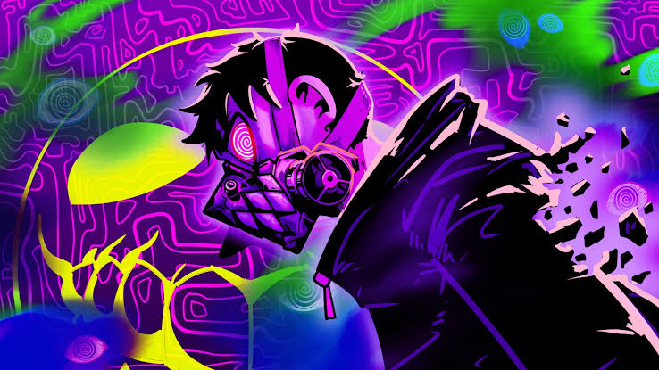
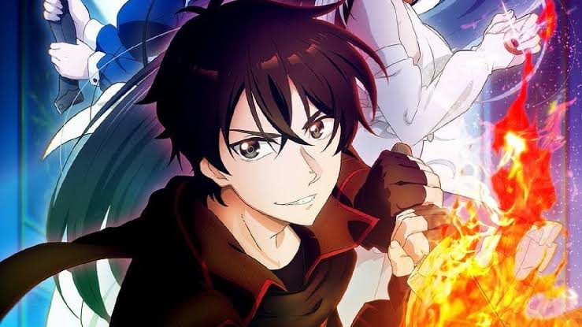
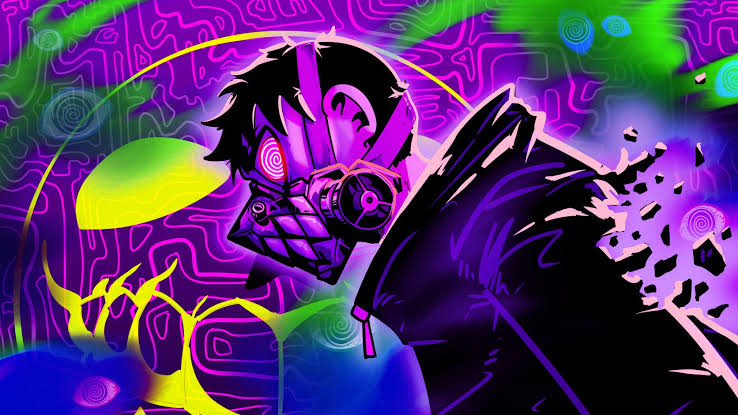
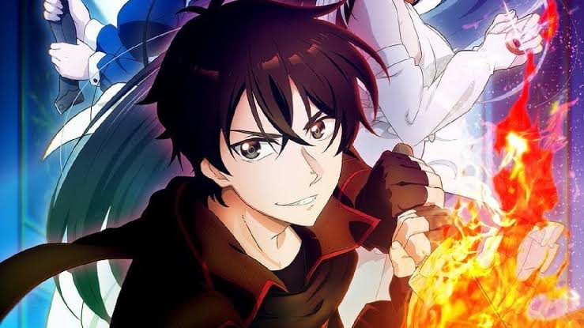

Black Clover
Um garoto destemido e sem poderes mágicos luta pelo título de Rei Mago – enfrentando quatro rivais que foram banidos e agora ameaçam destruir o Reino Clover
Jaryuu Tensei
A morte é o fim... pelo menos, esse é o caso para a maioria das pessoas. Depois que um vendedor comum morre em um acidente de carro causado por um casal se pegando, ele reencarna em outro mundo como um dragão feroz e poderoso. No entanto, ser um dragão maligno tem sua própria cota de problemas, pois aventureiros e seres malignos o procuram na tentativa de matá-lo. Kuroe, uma aventureira que não desistiu de derrotar o dragão, continua enfrentando-o para testar a si mesma e provar sua coragem. Mas depois de sofrer outra perda, Kuroe e o dragão maligno "Ja" têm uma conversa franca. Com um novo entendimento entre eles, eles deixam a casa de Ja e partem para a cidade juntos. Embora sua companhia seja breve, ela abre caminho para as viagens hilárias de Ja e seus muitos encontros pelo mundo.
Jujutsu Kaizen
Jujutsu Kaisen é sobre um estudante do ensino médio, Yuji Itadori, que engole um talismã amaldiçoado, o dedo de um demônio, e fica possuído. Yuji é condenado à morte por exorcismo por feiticeiros de Jujutsu, mas antes que isso aconteça, ele é encarregado de encontrar e consumir os dedos restantes desta maldição.
One Piece
O mundo de One Piece é povoado por humanos e muitas outras raças, como anões, homens-peixe e gigantes. É coberto por dois vastos oceanos, que são divididos por uma enorme cordilheira chamada Red Line; A Grand Line, um mar que corre perpendicularmente à Red Line, divide-os em quatro mares: North Blue, East Blue, West Blue e South Blue. Ao redor da Grand Line, estão duas regiões chamadas Calm Belts, semelhantes às latitudes dos cavalos, que quase não experimentam ventos ou correntes oceânicas e são o terreno fértil para enormes criaturas marinhas chamadas reis-dos-mares. Por isso, os Calm Belts são barreiras muito eficazes para quem tenta entrar na Grand Line. No entanto, navios da Marinha, membros de uma organização intergovernamental conhecida como Governo Mundial, são capazes de usar uma pedra de prisma-do-mar (em japonês: 海楼石, transl. Kairōseki) para mascarar sua presença dos reis-dos-mares e podem simplesmente passar pelos Calm Belts. Todos os outros navios são forçados a seguir uma rota mais perigosa, passando por uma montanha na primeira interseção da Grand Line e da Red Line, um sistema de canais conhecido como Reverse Mountain. A água do mar de cada um dos quatro mares sobe aquela montanha e se funde no topo para fluir por um quinto canal e entrar na primeira metade da Grand Line, chamada Paraíso por causa da comparação com a segunda metade
Sense Life
Noah é um garoto pacato que procura por um sentido para sua vida, seus dias cotidianos irão sumir após encontrar Kaleb, um usuário de drogas que tem uma grande recompensa por sua cabeça.
The New Gate
THE NEW GATE é um jogo online com vários jogadores. Um dia, o espaço virtual no jogo muda abruptamente, aprisionando pessoas do mundo real dentro dele. O jogador mais forte do jogo, um garoto chamado Shin, decide colocar um fim nessa loucura, mas o inimigo mais poderoso no mundo do jogo, Origin, está em seu caminho.